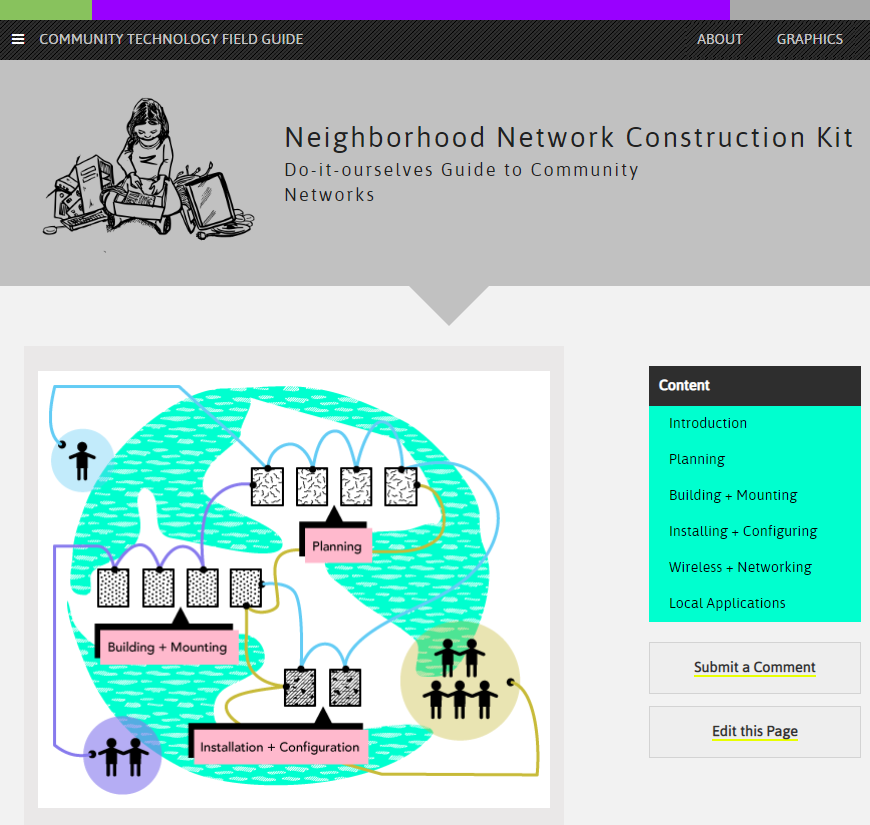

North Woods Project:
Mobilizing Digital Field Methods
and Art-Based Research
for Science Communication
and Environmental Advocacy

Mobilizing Digital Field Methods
and Art-Based Research
for Science Communication
and Environmental Advocacy
This webtext documents a location-based digital writing project exhibited at the 2017 Association for the Study of Literature and the Environment (ASLE, 2017) conference held in Detroit, Michigan. This project was funded through a grant from the conference organizers, and it engages with the three core aims of ASLE’s subvention grant program by 1) producing a project “of a scholarly and/or creative nature that engage[s] with new media,” 2) fostering “intercultural or interdisciplinary exchange,” and 3) bringing “insights from the environmental humanities to a non-academic public” (ASLE). This webtext builds from the aims of the project to contribute to our broader goal of offering a generative model for how mobile technologies might be employed within writing studies scholarship and in public humanities contexts more broadly.
“Articulate Detroit,” the project presented at the conference, uses free mobile application software to generate augmented reality displays at eighteen locations along Detroit’s iconic Woodward Avenue. Augmented reality technologies (“AR” hereafter) overlay multimedia digital content onto a live-camera view of one’s physical surroundings. The digital content displayed within AR experiences can be anything from sound media to complex 3D animations; however, due to technical and production limitations, we restricted the digital content of our project to short two- to three-minute videos discussing the evolution of Detroit as a networked rhetorical space. Logistically, project participants traversed a two-mile stretch of Woodward Avenue from Wayne State University (the conference location) to the Detroit River, stopping periodically to access geo-tagged AR displays through their mobile devices. These AR displays coordinate archival video and photographic media of prominent moments in Detroit’s cultural and rhetorical history with the material spaces in which these events occurred. As such, these AR displays allow users to visualize the complex spatial networks that make up the city of Detroit. For this webtext, the complete AR content is available through a Google Map and videos are also included throughout.

Participants in the ASLE walking panel taking the tour.
This project emerges from Jeff Rice’s (2012) work in Digital Detroit: Rhetoric and Space in the Age of the Network. Here, Rice makes the case for reading cities (among other spaces) as a series of overlapping rhetorical networks comprised of public narratives, personal histories, and cultural materials. Unraveling the rhetorical underpinnings of a city like Detroit, Rice claims, requires a more emplaced, personal, and meandering methodology that challenges the totalizing “grand narratives” through which we might normally approach an iconic space. We claim that the mobile affordances of modern smartphone technologies offers a useful platform for enacting Rice’s theories of digital writing as a networked phenomenon. As such, our project aligns most with Rice’s imperative that understanding spatial rhetorics as networked requires recognizing that “the network...operates by movement, not fixity. That movement involves how we move within information and spaces simultaneously” (10).
Throughout his book, Rice employs chora—a concept popularized by Plato in the Timaeus to refer to the space inside the polis but outside the city proper—as a method over topos. While topos-based methods encourage us to see locations as isolated, choric methods insist that we step back and see the larger connections that emerge out of place as networks. Gregory Ulmer (1994) defines choragraphy as “a rhetoric of invention concerned with the history of ‘place’ in relation to memory” (p. 39), and a “method for writing and thinking electronically” (p. 45). As Ulmer (2005) asserts in Electronic Monuments, “chora mediates individual/collective identities” (p. 26). Ultimately, the “Articulate Detroit” project seeks to catalyze new types of choric movement through Detroit beyond the rhetoric of decay and rebirth that have come to typify discussions of the city. To this end, the project illuminates Detroit’s complex identity as a site of competing histories, ideologies, and economic and cultural trajectories. In so doing, we hope to visualize how the city of “Detroit” (or any city for that matter) is not reducible to any kind of static, essential identity but rather emerges as the result of contingent relationships between and among human and non-human actors.


Hover over imageS to simulate an AR overlay effect. Images link to Youtube videos from the project.
The “Articulate Detroit” project also emerges from efforts within the Trace Innovation Initiative, a collaborative digital humanities research endeavor within the University of Florida’s Department of English. Overall, the goal of Trace’s augmented reality project series is to “explore how writers use AR to modify and transform dominant narratives about objects, subjects, sites, and historical moments...by visualizing and reinventing the discursive boundaries surrounding these concepts” (Trace). As such, “Articulate Detroit” connects with other AR projects from Trace that are testing the rhetorical constraints and affordances of emerging mobile writing technologies as a medium for (re)writing space. For instance, the Trace affiliated project “Augmented Velorutionaries” allows users to view digital “ghost bikes” at locations where a cyclist has been killed or seriously injured by a car within the city of Jacksonville, FL. These digital apparitions serve as haunting reminders of what Gregory Ulmer refers to as the “abject sacrifices” of car-centric urban planning.
This project also builds from the authors’ interests in the emerging relationship between technology and place-based composition practices. Composing with and alongside locations is a vital component of emplaced writing practices. In his article “From Augmentation to Articulation: (Hyper)linking the Locations of Public Writing,” Jacob Greene (2017) questions the rhetoric of “augmentation” that is prominent in contemporary discussions of mobile technologies. As an alternative, he proposes strategies of “articulation,” which he defines as a process of acknowledging the “distributed agential forces embedded within one’s environment.” Moreover, Madison Jones (2018) describes the value of bridging contemporary movements in location-based writing to work in ecocomposition to understand how ecologies of writing emerge from the relationships among writers and the material environment. Thinking of place as “choric premises [to] the very conditions of writing itself” further suggests how writers can compose with/in places as opposed to merely writing about a place.
By integrating digital counter-discourses within spaces where information is often tightly controlled and highly regulated (such iconic city streets or busy urban intersections), location-based AR projects work to re-articulate dominant narratives about a given space. As Woodward Avenue becomes a site impacted by gentrification, this project demonstrates how augmented reality can allow divergent histories to occupy sites of change.
TopTo our knowledge, Detroit, Michigan is the only American city to have an entire Wikipedia entry dedicated to its decline (“Decline of Detroit,” 2019). Along with many other cities, Detroit faced a series of issues throughout the late twentieth century—from white flight to decreasing jobs in manufacturing to government corruption—that caused its population to plummet by over sixty-percent. Due to its size and centrality to the American manufacturing industry, this “rise and fall” narrative of Detroit has long functioned as kind of metonym for the rapid decline of social and economic opportunity throughout the American midwest. Although the city has rebounded significantly since the 2008 financial crisis, many of these issues still plague Detroit in ways that continue to shape its material and rhetorical future.
Detroit exemplifies the need for deeper engagement with place-based thinking to address economic problems in ways which are sustainable and socially just. An example of this issue is the urban tree planting efforts made by the nonprofit organization The Greening of Detroit. Their mission “is to enhance the quality of life for Detroiters by planting trees, repurposing the land to create beautiful and productive green spaces and helping communities rebuild their neighborhoods one lot at a time” (“Greening of Detroit”). Urban tree planting practices have been common for cities like Detroit, whose economic problems were also reflected in urban landscapes that became deforested by Dutch Elm disease, such as Buffalo, New York. Both cities were once known as “the city of trees.” In Buffalo, most of the locations which retained their trees also retained their property value, which is the case for Elmwood Village. Tree planting is a means for the built urban environment to rebound as the cities financial situation improves. However, in Detroit, many residents are rejecting tree planting because of the economic burden it places on communities. A recent study suggests that the high number of “no-tree requests” in Detroit are a result of histories of problematic relations between the city and its citizens (Carmichael and McDonough, 2019).
In Digital Detroit, Jeff Rice works to combat common perceptions of Detroit as a city perpetually “on the rise,” a rhetorical move that he claims reduces the choric complexity of Detroit to a topos that can easily circulate in print and online networks. Rice’s methodology draws on spatial theorists such as Michel de Certeau and Henri Lefebvre to map out a more robust rhetorical portrait of Detroit capable of challenging this dominant narrative about the city. Rice approaches Detroit as a choric space by switching between the modes through which he experiences the city, whether at the level of the corner store (as consumer), the intersection (as pedestrian), the street (as driver), or the grid (as a user of Google maps). In so doing, Rice is better able to interrogate the rhetorical complexity of iconic locations in Detroit, from the Maccabees building at Wayne State University to 8 mile road to the Michigan Central Train Station. However, Rice’s approach is best captured in his discussion of what is perhaps the most significant space to Detroit’s social, economic, and cultural identity: Woodward Avenue.
In “The Rhetorical Situation,” Kenneth Burke (1973) describes how transportation modalities change our experiences and even our motives as we interact with places. Burke explains that “to walk faster, or run faster, one works harder. Similarly, to drive faster on a bicycle, one works harder. But when I learned to drive a car, I suddenly found myself confronting a quite different realm of motives” (269). Whether it is through the navigation application on our phone or a four-door sedan, technologies shape the ways we interact with and understand place. By navigating Detroit as pedestrian, driver, and map user, Rice acknowledges and repurposes the “realm of motives” afforded by various navigational tools and transportation methods. As he moves through the city, Rice describes the meandering routes he devises in his daily commute down Woodward Avenue as an effort to underwrite Google Maps’ “rhetoric of efficiency” and “find its [Woodward Avenue’s] relationship to other places, moments, people, and things” (46, 48).
This project attempts to bring these theories to bear on the material landscape of Detroit. In chapter two of Digital Detroit, Jeff Rice demonstrates how thinking about Woodward Avenue as a “database within the network of Detroit” can help visualize and deploy a choric methodology for mapping a public’s “individual/collective” relationship to a city. In doing so, Rice transforms Woodward Avenue from a topos of ruin and decay into a network of (hyper)linked rhetorical elements revealing the various social, cultural, and political discourses that constitute “Detroit” as a spatial phenomenon. Rice’s discursive tracing animates Detroit as a series of linked and contingent “relationships” irreducible to any kind of static, essential identity (6). Rice asserts that participating in such “turns and detours” requires that we “turn off of Woodward and engage with Detroit and Wayne State University as technological spaces, database entries in a larger network of information” rather than singular, static narratives trapped in a rhetoric of perpetual growth and decay (48).
Thus, our project seeks to extend Rice’s work of digging beneath the topos-driven discourse of Woodward avenue by pursuing a choric approach through the affordances of networked mobile media. Over the last decade or so, Woodward Avenue has been ground zero for a number of redevelopment projects in Detroit that seek to revitalize the economic and cultural epicenter of the city. In the process, Detroit’s unique cultural history and identity is in danger of being replaced by a more economically-viable, tourist-friendly, and gentrified urban environment. An example of this process is the QLine, an electric streetcar named for Quicken Loans that runs for just over three miles down Woodward Avenue.
The QLine streetcar which runs just over 3 miles down Woodward Avenue.
Since it was opened in May of 2017, the QLine has fallen short of many expectations. The Detroit People’s Platform, a local community advocacy group, argues that “the QLine project is a prime example of “transit gentrification” and highlights the growing disparity in mobility options in Detroit” ("Transit Gentrification"). They argue in part that corporately-driven public transit initiatives like the QLine do not properly serve the mobility needs of the wider Detroit community, many of whom live outside of the QLine’s narrow 3.3 mile route.
We see this project as unearthing what the gentrification of Woodward is demolishing and covering: the past (and the present) to make space for a clean, hipsterfied future. By taking the tour, counter-narratives of Woodward emerge. Rather than writing over places, augmented reality allows writers to engage place through layering information, creating divergent histories and reclaiming elements of those places.
Top“Articulate Detroit” puts Rice’s work of tracing the rhetorical networks that comprise Detroit back into the physical space of the city. As users traverse the space of Woodward Avenue with mobile devices in hand, they are able to articulate their perception of the city in real-time as they access multimodal AR displays informing them about defining moments and spaces within Detroit. As we hope to demonstrate through this digital project, an “articulated” Detroit encourages citizens to see their everyday environment as a networked phenomenon emerging from a series of rhetorically contingent relationships between material and immaterial (and human and non-human) entities.
The explosive growth of mobile computing technologies over the last decade has resulted in an increased interest within writing and rhetoric scholarship in theories and pedagogies of location-based digital writing. Although a comprehensive overview of this emerging subfield is beyond the purview of this webtext, we offer here a brief review of relevant scholarship that we drew upon to guide the rhetorical choices made in the design of our project. As John Tinnell (2017) points out in Actionable Media: Digital Communication Beyond the Desktop, “The lauded technical feats of digital-physical convergence do not come preinstalled with literary, artistic, or rhetorical innovations” (11). As such, it is important that scholars of computers and writing continue to interrogate the rhetorical potential of this emerging computing paradigm by detailing the design choices made throughout the creation of a mobile media project.
Writing and rhetoric scholars approach mobile media from a variety of angles; however, there seems to a be general consensus that location-based writing projects that employ mobile media must attend to the unique rhetorical characteristics of the environment in which the project is emplaced. In their article “Wearing the City: Memory P(a)laces, Smartphones, and the Rhetorical Invention of Embodied Space,” Jason Kalin and Jordan Frith (2016) describe how mobile technologies allow users to access the “embodied knowledge of [a] city” by extending the medial affordances of digital mapping software out into physical spaces of everyday life. Kalin and Frith point out that desktop-based mapping applications like Google maps privilege “engagement with a spatial representation over engagement with physical space” (224). Essentially, by looking at screens instead of streets, we lose out on the “optical knowledge” gathered from traversing a real, material environment and constructing a spatial representation cognitively in real time (224).
Whereas Kalin and Frith address the theoretical implications of mobile computing for concepts such as rhetorical memory and public space, other computers and writing scholars explore alternative methodological approaches to incorporating mobile media into their teaching and research practices. In making multimodal design choices for our project, we borrowed in part from Anders Sundnes Løvlie (2009), who writes that locative-media designers should think carefully about the modalities chosen to incorporate into the experience so as not to make the user “visually oblivious to her surroundings” (250). We incorporated this advice into the design of “Articulate Detroit” by ensuring that each AR overlay was paired with an accompanying audio narration so that each POI could be experienced with minimal visual obstruction if so desired. Rather than obscure the materiality of Woodward Avenue, this project interfaces with the location in order to unearth the sedimented histories of Detroit and create a mobile and updatable archive.

The final augmentation of the tour.
In “Geocomposition in Public Rhetoric and Writing Pedagogy,” Nathaniel Rivers writes that geolocative writing projects allow individuals to conceptualize writing as a phenomenon that “moves through space” creating “connections among people, places, and things” (576). For Rivers, practices of geocomposition are not reducible to the media content used within a given project (e.g. AR overlays, geocached digital objects, etc.) but rather emerge from the generative connections between human and nonhuman elements within a particular space. Rivers approach to geocomposition inspired our design decision within this project to separate each POI by at least a few blocks. Through this, we created a generative discursive space for participants to reflect on how the media they had just accessed changed their perception of not only Woodward Avenue but the city as a whole. As Rivers writes elsewhere with Casey Boyle, these kinds of locative writing projects “offer rhetorical scholarship and public theory in general...an activity for circulating place even as that place appears as though no circulation occurs at all” (99). In other words, mobile writing projects such as “Articulate Detroit” position readers/users as nodes within a network of circulation, thereby fostering a rhetorical context better capable of attending to the complex social, cultural, and historical realities of a dynamic urban space.
In his article, “The New Media Writer as Cartographer,” Christopher Schmidt (2011) writes that emerging mobile writing technologies offer “one alternative model of presenting information in a non-linear format, which is increasingly important in this digital age where the database has superseded narrative as the primary method for information storage and transmission” (312). Indeed, the non-linear affordances of mobile AR are well-suited for location-based writing projects, particularly for historical projects in which the physical routes that the user might traverse the space do not map easily onto a temporal chronology. Schmidt’s non-linear approach aligns with choric ways of thinking about place as an emergent entity where locations become the ever-emerging nexus between the divergent histories of the past and the possibilities of the future.
TopThis is a map of the locations augmented along Woodward Avenue in the walking tour which begins at Wayne State University and extends to Hart Plaza, where Woodward ends. Pins include links to the youtube video associated with each location. During the tour, these videos were triggered through the HP Reveal mobile augmented reality app, which has now been discontinued. However, we have made the video overlays accessible through the map below.
If the map does not load, you may access the map through this link.
Detroit’s city-wide lack of consistent internet coverage is part of the disparities that global-scale infrastructures place on marginalized residents. Citing a Federal Communications Commission report, a Motherboard article from 2017 points out that, in Detroit, “40 percent of the population has no access to the internet [...] of any kind” (Rogers). In the face of this lack of access, organizations like the Detroit Community Technology Project are developing “local and international community wireless mesh networks” for underserved communities and training members of the community “to build and maintain their own wireless communications infrastructure” (“Detroit Community Technology”). Organizations like DCTP demonstrate how digital networks might be further rooted in local communities rather than relying on global Telecom companies. These grassroots movements are interfacing with large-scale economic disparity through community networks.
Screenshot of the Neighborhood Network Construction Kit put together by the Detroit Community Technology Project.
As discussed throughout this webtext, Detroit has been made to stand in for many different economic and geographical ways of thinking in the national imagination, a mirror through which the country can see itself. The city is often read as a place on the verge of utopia or dystopia, as nearly ruined or reborn. In this way, Detroit is rhetorically constructed as what Michel Foucault terms a “heterotopia.” In his 1967 essay “Of Other Spaces” Foucault defines the concept in relation to the function of utopic and dystopic places:
The mirror is, after all, a utopia, since it is a placeless place. In the mirror, I see myself there where I am not, in an unreal, virtual space that opens up behind the surface; I am over there, there where I am not, a sort of shadow that gives my own visibility to myself, that enables me to see myself there where I am absent: such is the utopia of the mirror. But it is also a heterotopia in so far as the mirror does exist in reality, where it exerts a sort of counteraction on the position that I occupy. From the standpoint of the mirror I discover my absence from the place where I am since I see myself over there.
Detroit’s local economy is often thought of as a synecdoche, or stand-in for the entire United States, a mirror for the country to see itself, as it was during the 2008 financial crisis. Yet, Detroit persists as a place beyond these topological ways of defining the city. As a place, Detroit defies the metaphors of growth and decline, offering instead examples of resilience and resistance. This project engages Detroit as a choric and emergent space defined by the complex relations of its inhabitants. The “Articulate Detroit” project uses augmented reality to amplify these aims, seeking rather than to define the city, to unearth the network. Through AR, participants move through the looking glass of Detroit as a heterotopia, interfacing between networks of the digital and material environment.
In this project, we described a locative media walking tour that took place as part of ASLE’s “Rust/Resistance” conference. The conference theme drew upon Detroit’s histories of “rust, resistance, and recovery”:
Long associated with steel, car culture, and the music of Motown, Detroit is also a site of struggle for racial and environmental justice, against depopulation and ‘ruin porn,’ and for the preservation of artistic heritage. A nexus of encounters between indigenous nations and the French fur trade, it became a locus of the Great Migration, “white flight,” and gentrification. Water-rich on the strait between Lake Huron and Lake Erie, Detroit and its neighbors struggle against corroded infrastructure and government corruption (ASLE, “Rust”).
The “Articulate Detroit” project works to visualize the convergence of sedimented histories and contemporary disparities within the context of grassroots community resistance. As writing studies scholarship increasingly connects with public audiences and local spaces, projects like this one seek to engage and amplify community networks, rather than render those networks a static topology through definition.
Between completing the tour and this webtext, Aurasma (the AR software used to create the project) was purchased by Hewlett Packard, rebranded as HP-Reveal, and then promptly discontinued. Although we were able to preserve the spirit of the tour in the Google map on the previous page, this incident is emblematic of the ongoing corporatization of augmented space. Indeed, companies from Facebook to Apple are investing heavily in AR technologies in the hopes of becoming the “universal AR browser” for all locative media experiences. As the borders between digital and physical worlds continue to erode, it is vital that writing and rhetoric scholars not only continue to interrogate the rhetorical implications of this new computing paradigm but actively work to create more sustainable and inclusive digital platforms for creating and accessing AR content. To this end, researchers working with the Trace Initiative are currently pursuing possibilities for creating a humanities-based AR platform designed exclusively for public humanities projects.
Top
Association for the Study of Literature and the Environment (2017). “Subvention Grants - ASLE.” Retrieved January 9, 2019 from: https://www.asle.org/join-our-community/grants/research-grants/.
—. (2017). “Rust/Resistance: Works of Recovery” CFP for Association for the Study of Literature and Environment Conference, Wayne State University Detroit, Michigan, Retrieved January 9, 2019 from: https://www.asle.org/wp-content/uploads/ASLE-2017-CFP.pdf.
Boyle, Casey, and Nathaniel A. Rivers (2018). “Augmented Publics.” Circulation, Writing, and Rhetoric, edited by Laurie Gries and Collin Gifford Brooke, Utah State University Press.
Burke, Kenneth (1973). “The Rhetorical Situation.” Communication: Ethical and Moral Issues, Taylor & Francis, 263–76.
Carmichael, Christine E. and Maureen H. McDonough (2019). “Community Stories: Explaining Resistance to Street Tree-Planting Programs in Detroit, Michigan, USA.” Society and Natural Resources, Retrieved January 9, 2019 from: https://doi.org/10.1080/08941920.2018.1550229.
“Decline of Detroit” (2019, 3 March). Wikipedia, Retrieved January 9, 2019 from: https://en.wikipedia.org/w/index.php?title=Decline_of_Detroit&oldid=886043540.
“Detroit Community Technology Project” (nd.) Allied Media Projects, Retrieved January 9, 2019 from: https://alliedmedia.org/dctp.
Foucault, Michel. “Of Other Spaces (1967), Heterotopias” Michel Foucault, Info, Retrieved January 9, 2019 from: https://foucault.info/documents/heterotopia/foucault.heteroTopia.en/. Trans. from Architecture, Mouvement, Continuité no. 5 1984, 46-49.
Greene, Jacob (2017). “From Augmentation to Articulation: (Hyper)Linking the Locations of Public Writing.” Enculturation: A Journal of Writing, Rhetoric, and Culture, 24, Retrieved January 9, 2019 from: http://enculturation.net/from_augmentation_to_articulation.
"The Greening of Detroit" (n.d.). The Greening of Detroit, Retrieved March 6, 2019 from: https://www.greeningofdetroit.com/
Jones, Madison (2018). “Writing Conditions: The Premises of Ecocomposition.” Enculturation: A Journal of Writing, Rhetoric, and Culture, 26, Retrieved January 9, 2019 from: http://enculturation.net/writing-conditions.
Kalin, Jason, and Jordan Frith (2016, May). “Wearing the City: Memory P(a)Laces, Smartphones, and the Rhetorical Invention of Embodied Space.” Rhetoric Society Quarterly, 46(3), 222–35.
L⊘vlie, Anders Sundnes (2009). "Textopia: designing a locative literary reader." Jounral of Location Based Services, 3(4), 249-276.
Rice, Jeff (2012). Digital Detroit: Rhetoric and Space in the Age of the Network. Southern Illinois University Press.
Rivers, Nathaniel A. (2016). “Geocomposition in Public Rhetoric and Writing Pedagogy.” College Composition and Communication, 67(4), 576–606.
Rogers, Kaleigh (2017, November) “Ignored By Big Telecom, Detroit's Marginalized Communities Are Building Their Own Internet.” Motherboard, Retrieved January 9, 2019 from: https://motherboard.vice.com/en_us/article/kz3xyz/detroit-mesh-network
Schmidt, Christopher (2011, December). “The New Media Writer as Cartographer.” Computers and Composition, 28(4), 303–14.
Tinnell, John (2017). Actionable Media: Digital Communication Beyond the Desktop. Oxford University Press.
"Trace ARCs: Augmented Reality Criticisms" (n.d.) TRACE. Retrieved March 6, 2019 from: http://trace-arcs.english.ufl.edu/about.html.
"Transit Gentrification" (n.d.). Detroit People’s Platform. Retrieved March 6, 2019 from: https://detroitpeoplesplatform.org/2017/02/transit-gentrification/.
Ulmer, Gregory L (1994). Heuretics: The Logic of Invention, Johns Hopkins University Press.
--- (2005). Electronic Monuments. University of Minnesota Press.
© 2024. Developed by the DWELL Lab at the University of Rhode Island. Funding for the North Woods Project was provided by the North Woods Stewardship Council at the University of Rhode Island and a CAREERS Cyberteam NSF Grant (no: FL6GV84CKN57). The authors acknowledge use of the resources of the URI Center for Computational Research and the Massachusetts Green HPC Center for this work. Any views, findings, conclusions, or recommendations expressed in this webtext do not necessarily represent those of our sponsors.